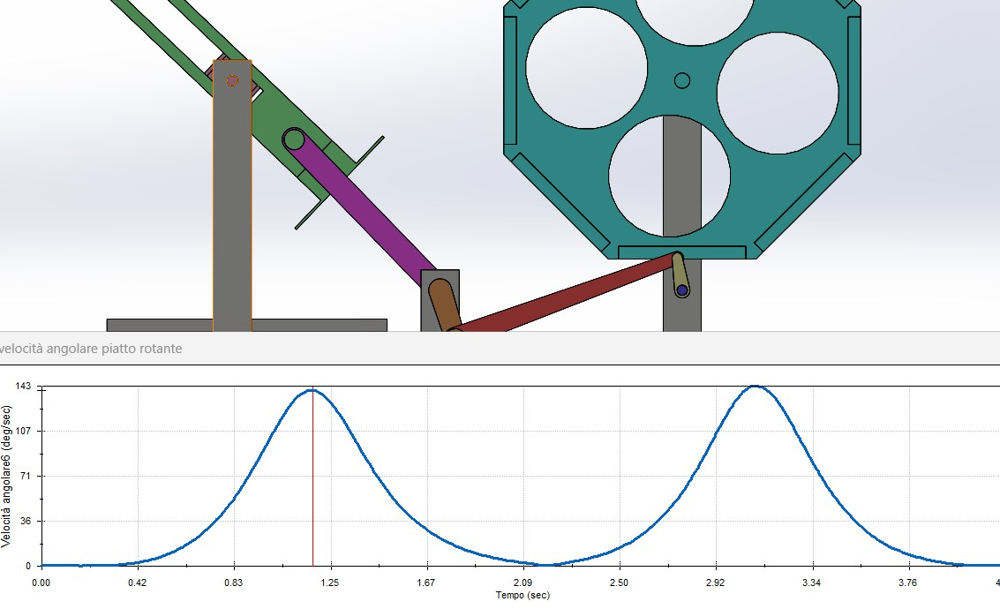

Obiettivo del progetto
Realizzare un modello virtuale di un meccanismo per trasferire oggetti e studiarne traiettorie, velocità e accelerazioni nei componenti principali.
Attività del gruppo
- Dimensionamento del quadrilatero articolato e modellazione dell'assieme in SolidWorks.
- Studio del movimento sincronizzato del piatto e della cassa rotante, con meccanismo di Ginevra a otto asole.
- Analisi in Motion a 15 giri/min e restituzione di grafici e traiettorie per piatto, rocker e croce di Malta.
Risultati
Il modello descrive un sistema a un grado di libertà. L'analisi documenta un movimento intermittente della croce di Malta di 45 gradi e una rotazione di 90 gradi del piatto, coordinati dal quadrilatero articolato.
Ipotesi e limiti
Studio di cinematica su modello virtuale. La presentazione segnala irregolarità nell'accelerazione dovute alla modellazione del contatto; non si tratta di una validazione fisica del meccanismo.

Ruolo nel progetto
Progetto universitario realizzato in coppia con Davide Calvelli. Le attività descrivono il lavoro condiviso.
Immagini tratte dagli elaborati del team. Scheda di sintesi per il portfolio; documentazione completa disponibile su richiesta.